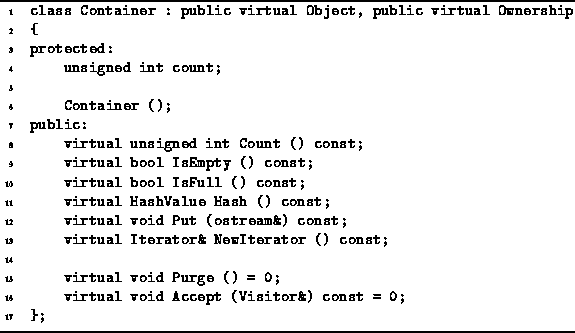
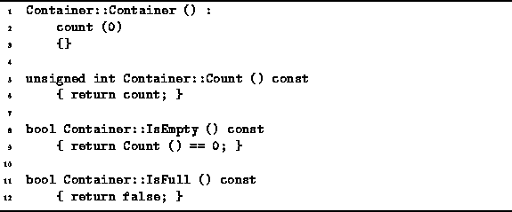

Data Structures and Algorithms
with Object-Oriented Design Patterns in C++
Data Structures and Algorithms
with Object-Oriented Design Patterns in C++The Container class abstracts the notion of a container--an object that holds within it other objects. A container is itself an object. Therefore, the Container class is derived from the Object class. A consequence of this is that containers can be held in other containers!
The declaration of the Container class is given
in Program  .
Notice that the Container declaration
uses multiple inheritance .
It is derived from two base classes, Object and Ownership.
We have already seen the definition of the Object class.
The Ownership class is defined
below in Section .
.
Notice that the Container declaration
uses multiple inheritance .
It is derived from two base classes, Object and Ownership.
We have already seen the definition of the Object class.
The Ownership class is defined
below in Section .

Program: Container Class Definition
The Container class is an abstract base class. It is intended to be used as the base class from which concrete container realizations are derived. The Container class public interface comprises eight virtual member functions--Count, IsEmpty, IsFull, Hash, Put, NewIterator, Purge and Accept. Default implementations are provided for the first six; the last two are pure virtual member functions.
A single member variable, count, is declared. This variable is used to keep track of the number of objects held in the container. The count field is set initially to zero. It is the responsibility of the derived class to update this field as required.
The Count member function is an accessor that
returns the number of items contained in the container.
The IsEmpty and IsFull functions are
Boolean-valued accessors which indicate whether a given
container is empty or full, respectively.
The Hash function is used in conjunction with hash tables
as discussed in Chapter and the Put function
inserts a human-readable representation of the container and its
contents in a specified output stream.
The purpose of the Purge function
is to remove all the objects from a container,
making it empty.
In order to describe the remaining two member functions,
Accept and NewIterator,
we need to become familiar first with the concepts of a visitor
and an iterator,
as well as with the Visitor and Iterator classes
which embody these concepts.
Visitors are discussed below in Section
and iterators are discussed in Section .
Program gives code that defines the
Container class constructor
as well as the default behaviors for several of the member functions.
The three functions Count, IsEmpty and IsFull
are member variable accessors--they are idempotent const member functions which
provide information about the status of the container.

Program: Container Class Member Function Definitions
The Count function simply returns the value of the count member variable. The IsEmpty function is a Boolean-valued accessor which returns the value true if the container is empty, i.e., it contains no objects. Notice that the IsEmpty function does not directly access the count field. Instead it calls Count which is virtual function.
In some cases, a container is implemented in a way which makes its capacity finite. When this is the case, it is necessary to be able to determine when the container is full. The IsFull function is a Boolean-valued accessor which returns the value true if the container is full. However, the default version always returns false.
Default behaviors are also provided by the Container class
for the Hash and Put operations.
The implementation of the Put function is discussed
in the following section.
The Hash function is given in Chapter .
 Copyright © 1997 by Bruno R. Preiss, P.Eng. All rights reserved.
Copyright © 1997 by Bruno R. Preiss, P.Eng. All rights reserved.